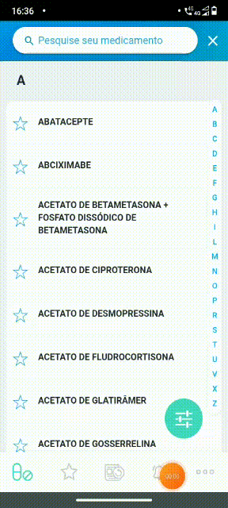
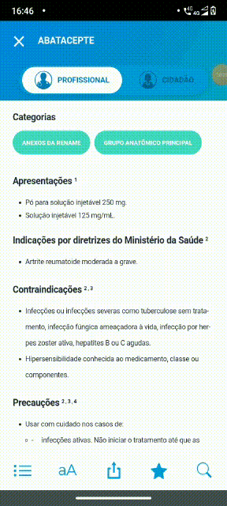
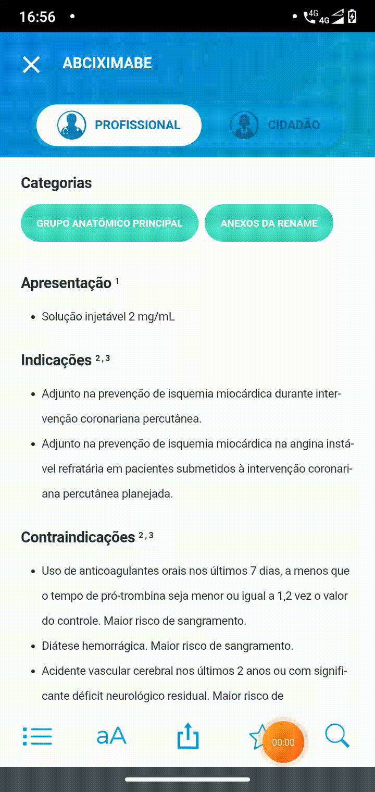

Forward from
1. Introdução
Existem dois tipos de rastreabilidade Forward: Forward-to e Forward-from. Ambos são usados para verificar se o projeto avança na direção desejada e para o produto certo. Ademais, garantem que cada requisito seja aplicado ao produto e que cada requisito seja testado minuciosamente. Este documento trata da rastreabilidade Forward From, a qual rastreia relacionamentos entre requerimentos e artefatos downstream correspondentes, incluindo casos de teste. Esse tipo de rastreamento garante que cada requerimento, além de satisfeito, foi verificado e validado.
2. Metodologia
A partir dos artefatos construídos até agora, foi possível elaborar uma Matriz de Rastreabilidade para conectar os Requisitos, Épicos, Features, História de Usuário e Funcionalidade. Como o MedSUS não é um software de código aberto, não foi possível relacionar o código-fonte aos requisitos. Além disso, alguns requisitos estão designados como "Em construção", pois o aplicativo se encontrava fora do ar no momento da criação deste artefato. Assim que ele voltar, estaremos completando o documento.
3. Pré-Rastreabilidade
3.1. Matriz de Rastreabilidade
Legenda:
- R: Requisito
- ST: Storytelling
- IR: Requisito de Introspecção
| ID | Requisito |
|---|---|
| R08 | O usuário deve ser capaz de alterar informações baseado no perfil de usuário (Profissional de saúde/Usuário comum). |
| ST19 | A aplicação deve disponibilizar o aumento (e redução) do tamanho da fonte das monografias. |
| IR3 | Acessar partes específicas da bula através de um índice. |
| R03 | O usuário deve ser capaz de favoritar medicamentos. |
| R12 | O usuário deve conseguir buscar palavras-chave no texto das informações. |
| R04 | O usuário deve ser capaz de filtrar por Grupo Anatômico Principal. |
| R05 | O usuário deve ser capaz de filtrar por anexo da Rename. |
| R06 | O usuário deve ser capaz de filtrar por controle especial. |
| R07 | O usuário deve ser capaz de filtrar por medicamentos que possuem genérico ou não. |
| ST17 | O app deve notificar os usuários acerca das atualizações da monografia dos medicamentos (inclusão, remoção e alteração). |
3.2. Especificações
R03
| R03 | O usuário deve ser capaz de favoritar medicamentos. |
|---|---|
| Épico | Filtro |
| Feature | Favoritar |
| História de Usuário | US05 |
| Funcionalidade |  |
| <!-- | Funcionalidade |
R04
| R04 | O usuário deve ser capaz de filtrar por Grupo Anatômico Principal. |
|---|---|
| Épico | Filtro |
| Feature | Filtrar por Atributos do medicamento |
| História de Usuário | US07 |
| Funcionalidade |  |
R05
| R05 | O usuário deve ser capaz de filtrar por anexo da Rename. |
|---|---|
| Épico | Visualização |
| Feature | Alterar Perfil |
| História de Usuário | US09 |
| Funcionalidade |  |
R06
| R06 | O usuário deve ser capaz de filtrar por controle especial. |
|---|---|
| Épico | Filtro |
| Feature | Filtrar por Atributos do medicamento |
| História de Usuário | US10 |
| Funcionalidade |  |
R07
| R07 | O usuário deve ser capaz de filtrar por medicamentos que possuem genérico ou não. |
|---|---|
| Épico | Filtro |
| Feature | Filtrar por Atributos do medicamento |
| História de Usuário | US11 |
| Funcionalidade |  |
R08
| R08 | O usuário deve ser capaz de alterar informações baseado no perfil de usuário (Profissional de saúde/Usuário comum). |
|---|---|
| Épico | Visualização |
| Feature | Alterar Perfil |
| História de Usuário | US01 |
| Funcionalidade |  |
R12
| R12 | O usuário deve conseguir buscar palavras-chave no texto das informações. |
|---|---|
| Épico | Filtro |
| Feature | Filtrar por Palavras-chave |
| História de Usuário | US06 |
| Funcionalidade |  |
| <!-- | |
| ST08 | |
| --> |
ST17
| ST17 | O app deve notificar os usuários acerca das atualizações da monografia dos medicamentos (inclusão, remoção e alteração). |
|---|---|
| Épico | Notificação |
| Feature | Notificar usuários |
| História de Usuário | US13 |
| Funcionalidade |
ST19
| ST19 | A aplicação deve disponibilizar o aumento (e redução) do tamanho da fonte das monografias |
|---|---|
| Épico | Visualização |
| Feature | Alterar tamanho da fonte |
| História de Usuário | US03 |
| Funcionalidade |  |
IR3 Em construção (Aplicativo fora do ar)
| IR3 | Acessar partes específicas da bula através de um índice. |
|---|---|
| Épico | Visualização |
| Feature | Apresentar índice |
| História de Usuário | US04 |
| Funcionalidade |
Referências bibliográficas
SERRANO, Milene; SERRANO, Maurício. Requisitos (Aula 26): Elicitação, Modelagem e Análise. 2022. Apresentação de Power Point. 44 slides. color. Disponível em: https://aprender3.unb.br/pluginfile.php/1668237/mod_resource/content/1/Requisitos%20-%20Aula%20026.pdf. Acesso em: 03 abr. 2022.
POHL, Klaus; RUPP, Chris. Requirements Engeneering Fundamentals: A Study Guide for the Certified Professional for Requirements Engineering Exam Foundation Level / IREB compliant. 1. ed. [S. l.]: O'Reilly Media, Inc., 2011. 183 p.
Histórico de versões
| Versão | Data | Alteração | Responsável | Revisão |
|---|---|---|---|---|
| 0.0.1 | 03/04/22 | Criação | Fernando | João Durso |
| 0.0.2 | 03/04/22 | Correções na padronização e no texto | João Durso | Fernando |
| 0.0.3 | 03/04/22 | Correção nas tabelas | Fernando | João Durso |
| 0.0.4 | 19/04/22 | Correção textual | João Durso | Fernando |
| 0.0.3 | 20/04/22 | Inclusão de artefatos que faltaram | Fernando | -- |